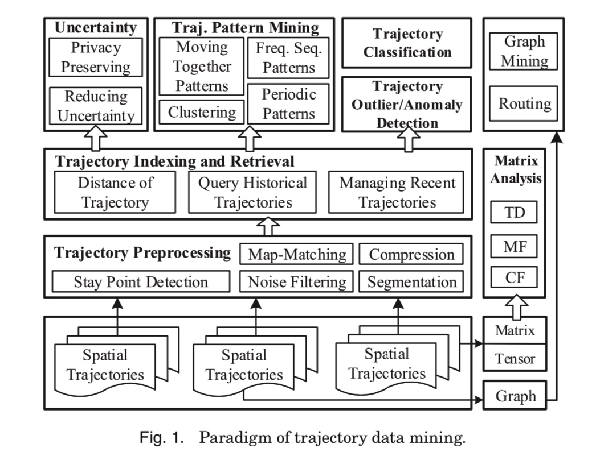

0.综述

首先是关于整个轨迹数据涉及的存储、数据清洗、分析、挖掘的一个整体模块。
1 trajectory preprocessing
GPS点漂移问题
http://www.xml-data.org/CHDLXX/html/62356297-1a5a-4b3f-bb57-547e9a401da0.htm
2 trajectory data management
2.1 trajectory indexing和retrieval
常见的检索类型有：
(1) range 检索： 检索在指定空间或时间内的轨迹
(2) KNN 检索：找到和指定轨迹或者点最近的k条轨迹
检索涉及到数据存储形式，可以看下原文，这里不细说了。
一般都是采用专门的GIS数据库进行存储和管理。
2.2 trajectory的距离/相似性
详见 2 轨迹相似性度量
3.uncertainty in a trajectory
(1) 减少不确定性
多条不确定性的路线合并=> 相对确定性的路线
(2) 将空间进行grids划分，将原本的轨迹点重新归属到新的单元格中，简化轨迹
4. trajectory pattern mining
(1) moving together patterns
move together pattern 主要是找到一组在一定时间内共同移动的物体。一般都是通过基于密度聚类的方法。
Jensen[2007] Continuous clustering of moving objects扩展了这种方法，使得在原来的距离的基础上增加了移动的方向、角度等因素。
(2) trajectory clustering
根据前面的关于轨迹距离/相似度的定义，可以对轨迹进行聚类。在这之前一般都需要对轨迹数据进行一步的处理，比如切分segment。
（3）mining sequential patterns
进行子序列模式挖掘，首先要定义序列中的location，即将(x,y)转为一个有标识性的概念，比如一个地点。方法：
- line simplification based 方法：比如先用DP方法识别出来key points。然后对每个轨迹的segment为一个item进行模式挖掘
- cluster based： 先把轨迹上的点，聚类到regions of interest，然后每条轨迹就可以用这些“关键点”来表示。
(4) periodical patterns
5. trajectory classification
一般来说，一个轨迹分类的过程大概是
(1)将轨迹切分成segment
(2) 提取特征
(3) 建立模型： As a trajectory is essentially a sequence, we can leverage existing sequence inference models, such as Dynamic Bayesian Network (DBN), HMM, and Conditional Random Field (CRF)
==> 可以看看相关论文
6. 轨迹异常检测
7.把轨迹转成其他的形式
(1) graph
- travel recommendation, 旅游的stay points, 然后研究图的联通，最大流之类的问题
- 计算user similarity。 通过更细粒度的停留点，以停留点为单位，每个人的轨迹就可以用停留点来刻画，即user1= (place1, place2, place3), user2 = (place1', place2', place3', place4')。然后可以进行user之间的相似度度量。
(2) matrix
可以做travel recommendation。 比如 user-location矩阵，zheng[2010b]提出了一个coupled-MF的方法。构造了一个location-activity矩阵。
(3) tensor
user-location-activity。作者介绍了一种分解方法
8.常用的轨迹数据集
public trajectory dataset
—GeoLife Trajectory Dataset [GeoLife Data]
—T-Drive Taxi Trajectories [T-Drive Data]
—GPS Trajectory with Transportation Labels
—Check-in Data from Location-based Social Networks [User check-in data]
—Hurricane Trajectories [Hurricane trajectory (HURDAT)]
—The Greek Truck Trajectories [The Greek Trucks Dataset]
—Movebank Animal Tracking Data [Movebank data]
基于轨迹特征的挖掘应用
轨迹数据应用案例
https://www.jianshu.com/p/e78016feda12
一个挖掘案例
https://github.com/haicg/datamining-geolife-with-python
https://github.com/jbremz/Beijing-Trajectories-Project
这个项目本身是个分类的项目，通过各种轨迹特征来判断交通方式。其中有很多关于轨迹特征指标的设计可以借鉴(比如角度、面积。。。)
数据来源，微软GeoLife GPS Trajectories项目，https://www.microsoft.com/en-us/research/publication/geolife-gps-trajectory-dataset-user-guide/
https://chuansongme.com/n/1884212353776
研究paper：
Trajectory Clustering: A Partition-and-Group Framework，Jae-Gil Lee, Jiawei Han，Kyu-Young Whang
参考资料
郑宇 https://www.microsoft.com/en-us/research/publication/trajectory-data-mining-an-overview/
1 基础工具包安装pip
在安装package之前，首先要安装的就是包管理器。
1.pip
安装pip sudo easy_install pip
通过pip安装python包 pip install xxx
常见问题
# 当前版本
pip --version
# 版本升级(有些包安装需要依赖高级版本)
pip install --upgrade pip
## 升级某些包
pip install --upgrade SomePackage
# 安装包时候报错`time out`
pip --default-timeout=100 install xxx
## 指定安装目录
pip -t 目标目录 xxx
更新pip给出一个最简单的办法就是通过pip uninstall pip卸载pip，再用easy_install pip安装pip,这样安装的就是最新版本的pip了。
权限
在mac上安装包的时候，因为系统限制不让写到内容到系统目录里去。解决方法
- 重新安装一个自己版本的python，比如可以用ancoda安装
- pip安装的时候加入参数
pip install xxx --user，安装到当前用户目录下。
安装完成后还需要将该目录加到环境变量里才能使用
export export PATH=/Users/$your_name/Library/Python/2.7/bin/:$PATH
更新某个包时候报错
Cannot uninstall 'six'. It is a distutils installed project and thus we cannot accurately determine which files belong to it which would lead to only a partial uninstall.
解决办法：
pip install six --upgrade --ignore-installed six
当机器上有多个版本python，安装到指定的python版本中
pip install -t /home/work/zhenzhen/python2.7/lib/python2.7/site-packages BeautifulSoup4
2.brew
/usr/bin/ruby -e "$(curl -fsSL https://raw.githubusercontent.com/Homebrew/install/master/install)”
1. conda 环境管理
conda的主要作用有如下两个：
- 包管理
Anaconda 安装，conda包管理器与pip类似，不同之处是可用的包以数据科学包为主，而 pip 适合一般用途。它也可以安装非 Python 的包。它是支持任何软件的包管理器。
- 虚拟环境管理器
它类似于另外两个很流行的环境管理器，即 virtualenv 和 pyenv
脚本和程序使用的默认 Python 是 Anaconda 附带的 Python。
可以安装完整版： https://www.anaconda.com/distribution/#download-section
也可以安装精简版miniconda： https://conda.io/miniconda.html
包管理-常用命令
conda list #查看安装的内容
conda upgrade --all #初次下载安装好后，建议更新所有包
安装包
conda install xxx
conda install numpy=1.10 #指定包的版本
conda remove package
conda upgrade --all
模糊查询相关包
conda search search_term
环境管理
默认的环境名字叫base(我的电脑上是)
通过conda env list可以列出你创建的所有环境
#创建环境
conda create -n env_name list of packages
eg. conda create -n my_env numpy
conda create -n py3 python=3
conda create -n py2 python=2
#进入环境
source activate my_env
#离开环境
source deactivate
# 删除环境
conda env remove -n env_name
其他
共享环境：将自己的工作环境保存下来给别人共享
#进入到你的环境中
source activate base
conda env export > environment.yaml
# 通过环境文件创建环境
conda env create -f environment.yaml
conda install 与pip install的区别
，pip list和conda list列表却不一致，conda数量 > pip
conda 安装包路径是 xxxxx\Anaconda3\pkgs
pip 安装包路径在虚拟环境下是 xxxx\Anaconda3\envs\a_conda_env\Lib\site-packages
所以当前环境下pip list只列举出当前包list
此处需要留意如果使用conda install 多个环境时，对于同一个包只需要安装一次。有conda集中管理。
但是如果使用pip因为每个环境安装使用的pip在不同的路径下，故会重复安装，而包会从缓存中取。
(2) 另外从体验上看感觉conda速度快很多
1. 数据可视化概述
目标: 系统的梳理在进行数据分析的时候，如何进行数据可视化。具体操作的时候以python的seaborn包为主。
在进行数据分析的时候，经常需要进行数据可视化。俗话说一图胜千言，如何将从数据中发现的结论以一种简单易懂、形象化的方式展现出来，是很考验数据分析人员的能力的。
1 方法部分
数据可视化，首先是要有数据，即我们的研究对象，而可视化的功能就是将数据中蕴含的关系或规律以图形的形式展示出来。 因此在进行数据可视化之前，一定要搞清楚的两件事：
- 数据类型， 即我们要研究的实体是什么类型的
- 数据要传递的信息以及要展示的关系
(1) 数据类型
不同的数据类型适合的图形表现是不同的，随着现在数据分析应用的越来越广泛，数据类型随着其应用的场景不同也是越来越多。统计学传统意义上的数据类型主要是：
- 分类型变量：比如性别
- 连续型变量：比如年龄
除了传统的这种之外，还有比如轨迹数据，视频数据等等
(2) 数据之间的关系
| 关系 | 示例图形 |
|---|---|
| 比较大小，包括不同个体或者分组之间 | 常用的比如将面积、尺寸进行可视化。条形图、面积图 |
| 数据的集中程度 | 一般是热力图，比如地图上交通的拥挤程度 |
| 地理信息 | 地理位置数据 |
https://zhuanlan.zhihu.com/p/25632363
2 工具部分
在实际操作中可能会涉及的使用工具有如下几种
- Excel
excel作为微软office的办公软件，适合一些相对简单的数据分析，其本身包含的绘图功能基本上可以覆盖一些常用的需求。比如一些基本的绘图、数据分析功能。除此之外，excel还可以自己增加一些插件，比如功能强大的 power Map https://support.office.com/zh-cn/article/power-map-%E5%85%A5%E9%97%A8-88a28df6-8258-40aa-b5cc-577873fb0f4a
适合展示一些需要进行地图可视化的数据，比如分省份的销售额，
其还可以制作随时间变化的动态小视频，比如人的轨迹变化等等。
- 可视化BI
比如Tableau， power BI， FineBI等常见的一些可视化软件
- 编程工具-python & R
R的ggplot应该是多数统计学家们使用的绘图工具，python中常用的基础绘图pacakge是matplotlib，以及在其基础上衍生出来的比较炫酷的 seaborn，其操作命令比较简单。有点类似R中的ggplot.
python版本的echarts包：http://pyecharts.org/#/zh-cn/intro
- 工具平台
蚂蚁金服 https://antv.alipay.com/zh-cn/vis/chart/color-map.html
百度的echarts
参考资料
https://blog.csdn.net/suzyu12345/article/details/69029106
seaborn
pyecharts https://github.com/pyecharts/pyecharts
2.echarts接口
pyecharts
http://pyecharts.org/#/zh-cn/charts?id=treemap%EF%BC%88%E7%9F%A9%E5%BD%A2%E6%A0%91%E5%9B%BE%EF%BC%89
Copyright © 2015 Powered by MWeb, Theme used GitHub CSS.